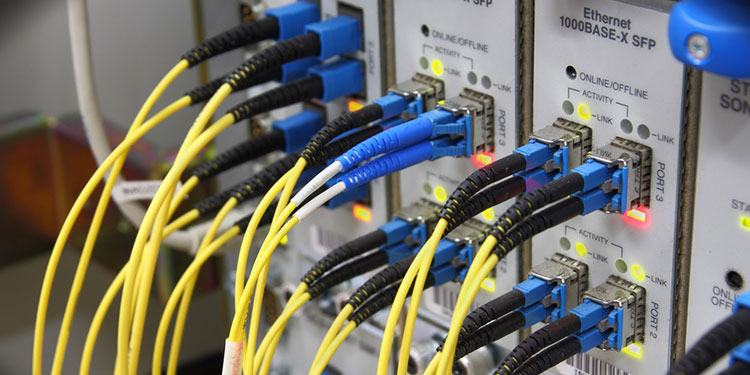

发布时间
Mar 22,2022什么是网络基础设施以及网络基础设施安全？
网络基础设施
网络基础设施由整个网络的硬件和软件组件组成，这些组件支持连接、通信、操作和管理。它提供用户、进程、应用程序、服务、外部网络和互联网之间的通信路径和服务。由于连接几乎是无限的，因此必须有控制和安全性来防止盗窃、故意数据损坏以及恶作剧的用户的访问。
网络基础设施有线网络与无线网络的区别
有线和无线网络在很多方面都很相似，但也有一些关键的区别。 有线网络是指使用电缆连接网络上所有计算机的网络。有线网络可能很快，但很难建立。如果您想将新计算机或设备添加到有线网络，则必须将新电缆敷设回本地服务的发源地。 无线网络是一种使用无线电波在计算机之间发送信息的网络。如果你有无线网络，它比有线网络更容易设置，即使在大型建筑中也可以快速设置。然而，它们没有有线网络那么快，而且通常会遇到更多来自附近其他无线设备（如手机）和其他接入点的干扰问题，以及实际设备本身的其他固有问题。
 有线网络网络基础设施的重要性
网络基础设施是所有业务通信的主干。它为所有其他网络活动提供了基础。它还可以在各种设备之间交换数据、语音和视频。 以下是网络基础设施的一些优点：
- 经济高效–网络基础设施几乎不需要维护，而且可以使用数年而无需更换。
- 可靠–网络基础架构是为性能而构建的，这意味着您的数据将在很少或没有中断的情况下平稳流动。为所有用户和客户设定并期望有保障的服务级别。
- 高效–网络基础架构允许您同时连接许多不同的设备，无论它们是在同一个房间还是在全球各地。
- 可扩展–网络基础设施可以根据需要进行扩展，以适应组织网络中不断增长的需求，以及对外部资源的访问。
网络基础设施安全
网络基础设施安全是一套程序，不能将其视为一个停滞的过程。为网络建立一个安全策略需要定期和永久的努力。实现安全方法只是第一步。网络的底层基础架构应该考虑各种实施、维护和持续活动流程的方法。 在考虑网络基础设施安全应如何成功可靠地发挥作用时，建议采取以下做法: 验证和监控硬件/软件：任何网络安全功能都依赖于有效的硬件和软件。我们建议采用正式和定期的做法来验证和监控网络的硬件和软件。一些非法产品可能使用恶意内容制造，这些恶意内容可能故意存在漏洞。安装前应确认任何新产品的良好性能。为了确保持续的完整性，安全策略应该对硬件和软件进行持续的监控和验证。 动态安全访问：任何网络安全的一个可取功能是采取主动安全访问方法。这与提供给组织或企业成员的访问级别有关。管理访问或约束可以在动态方法中应用，管理访问权限和管理凭据。强烈建议通过多因素身份验证进一步确保用户的真实性。 结构化细分：网络安全的一个核心功能也采用了细分结构。在基础设施中创建分段部分为缓解潜在威胁的传播提供了机会。假设一个网络的一个部分受到攻击。在这种情况下，可以关闭或隔离其他组件，以避免风险扩散。这些段可以使用物理或虚拟资源来执行。可以建立多个物理路由器来管理不同的网段，或者可以在没有硬件的情况下实现虚拟设计。
网络基础设施安全